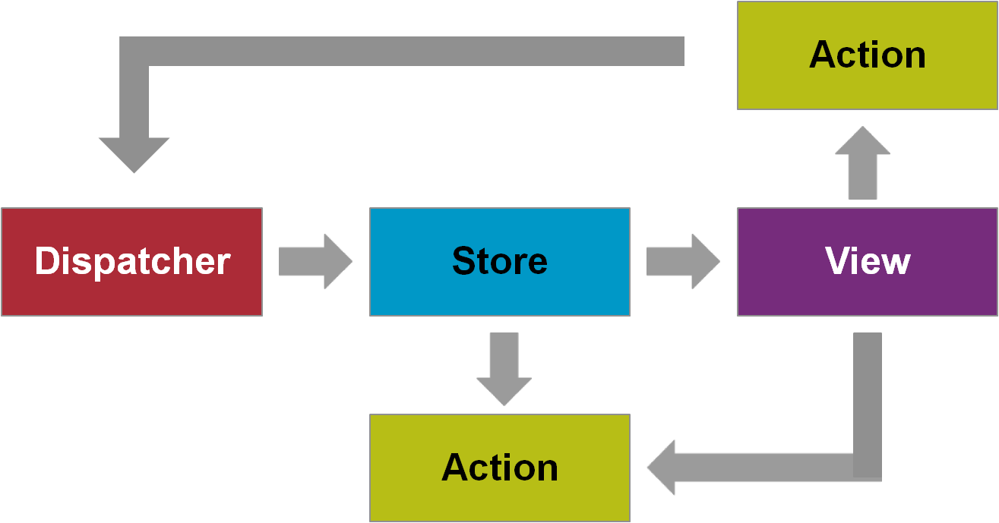

Web Application
Architecture
Tim Lüecke, Marek Matczak
Client Infrastructure
(a.k.a. TI-Architecture)
Classical Web Applications

The content of each web page is fully rendered on the server. Each action requires a round trip to the server which contains presentation logic and application state.
Single Page Applications

The content of a page is retrieved with a single page load. However, additional resources may dynamically be loaded and added to the page as necessary. The page does not reload any more.
Challenges
of Single Page Applications
- Bookmarking, Forward/Back Buttons - can be solved by the History API / fallback to hashbang URLs
- Search engines optimization - can be solved by rendering a static HTML which is then returned crawlers, see Prerender
- Speed of initial load - can be solved by asynchronous loading of JavaScript modules or so called isomorphic JavaScript
Client Architecture
(a.k.a. T-Architecture)
Model View Controller

Model View Presenter

Model View View Model

Flux
Unidirectional Data Flow
Open Questions
- How is the data converted from the allowed value set and value type in the model to the value set and type in the View?
- Where does
Internationalization happen? - What about
validation of user input? - How does the client talk to the application core?
- What about dialog states and widget states? Are states data or are they something else?
- What about states that are dependent on other states?
- How to design that a state controls if an action can be executed or not?
- How does the model look exactly?
- Do I need observerable TOs?
- …
Projects gone wrong
TODO: list of examples where simple patterns are not enough...
Let's step back
What we are trying to achieve, is a maintainable client.
For that we need to handle its complexity.
Complexity comes in two dimensions:
- Functional complexity
- Technical complexity
Handling Functional Complexity
Entering component-oriented architecture
Split application into functional components handling a specific functional concern.
Features of components
- Providing services to other components via interfaces
- Depends on other components by importing their services
- Encapsulated: implementation can be replaced
- Element of reuse
- Composed of other components (composition hierarchy)
- Feasable unit of construction, implementation and planning
On the client components are called dialogs.
Example: How do we handle dialogs such as this?

Functional decomposition into dialog components


Car configurator could then be reused for public website.
OASP Client Architecture
In OASP we aim at a dialog-component-based architecture differentiating between the dialog components, their managing container and the server access layer:

For a concrete framework, this requires tayloring how this is achieved.
s. Devon methodologyDialog Container Architecture
The container is responsible for the configuration, lifecycle-management and bootstrapping of the dialogs and client application.

Mostly provided by framework, but might need to be extended.
Handling Technical Complexity
Technical Tasks of a client
- Displaying the user interface
- Displaying (business) data
- Accepting user input
- Controlling the dialog and dialog flow
- Validating of user input
- Controlling the presentation state
- Calling the server for logic
OASP Dialog Component Architecture
Distribute the responsibility of these tasks along the depicted components following the separation of concerns principle.

Interactions between dialogs
Dialog components interact with each by either embedding each other or forwarding the control flow to each other

Summary: OASP Architeture

The OASP Client Architecture is a meta-architecture for arhcitectues based on a concrete framework:
- serving as a blueprint for checking completeness
- providing a stable orientation
OASP4JS Architecture
Based on Angular
- Implementation of meta-architecture based on Angular
- Taking over the Angular best practices
- Filling the gaps where needed
Angular Dialog Container
- Application provided by Angular root module bootrapped by framework
- Shared module for implementing reused components
- Angular Injector as service registry configured by root module
- Environment class as configuration management
- Dialog management by the Angular framework itself
Angular Configuration Management
Definition
"environmentSource": "environments/environment.ts",
"environments": {
"dev": "environments/environment.ts",
"ci": "environments/environment.ci.ts",
"staging": "environments/environment.staging.ts",
"prod": "environments/environment.prod.ts"
}
.angular-cli.json

Angular Configuration Management
Usage
// Import Statement
import { environment } from '../../../environments/environment';
// Usage
this.http.get<Flight[]>(environment.backendUrl + '/flights');
The import statement does not change when changing the environment.
Angular Dialog / Dependency Management

When Angular compiler creates HeaderComponent injectors are asked until the depency can be found or root injector can not handle
Angular Dialog components
Possible representation of dialog components in Angular
- One component with or without HTML template for simple dialogs
-
One module for complex dialogs consisting of different sub components, e.g.
- Smart components
- Dumb components
Angular Dialog Architecture
View Layer
- View represented by HTML template for simple dialogs or dumb components for complex dialogs
- DOM tree and attributes as presentation data
- Applied CSS styles as presentation state
- DOM events as presentation events
Presentation Layer
- Data binding:
- via two-way binding for simple components
- One way data binding + event handling for smart/dumb component pattern
- Action binding by via events
- State binding: see data binding
Dialog Core layer
- Data storage and dialog state via State service
- Action processing by smart component methods registered on state observables
Dialog Interactions
- Embedding naturely supporting by using selector in template
- Dialog flow implemented by Angular Router